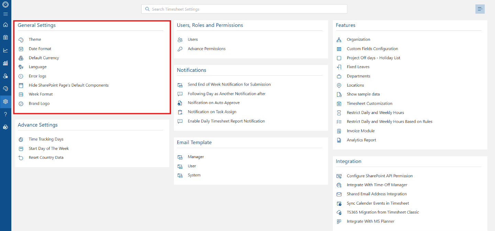
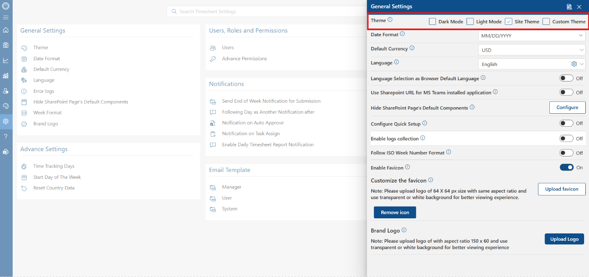
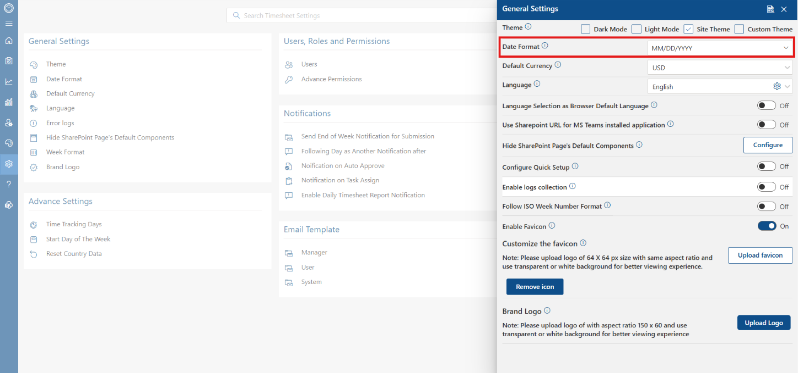
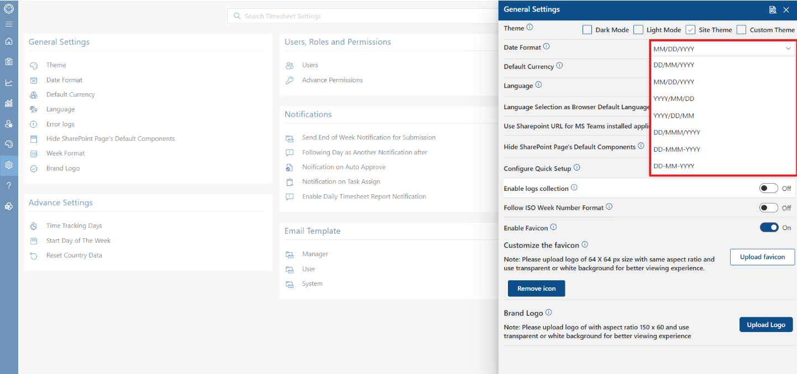
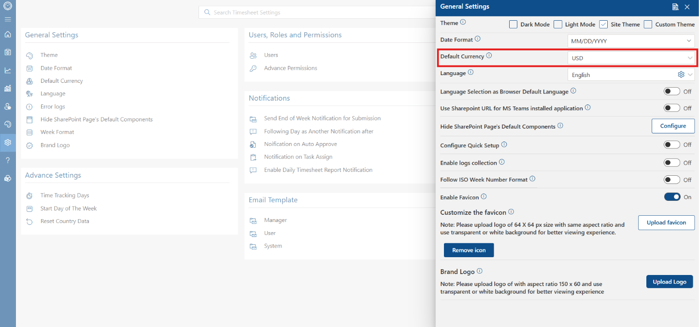
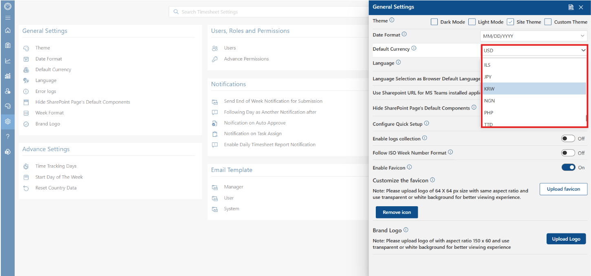
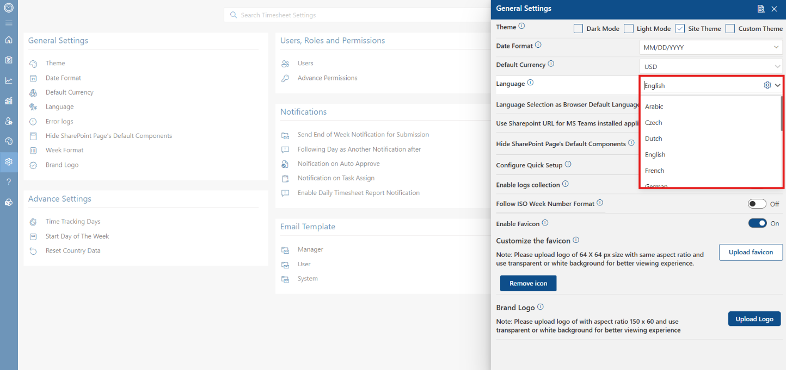
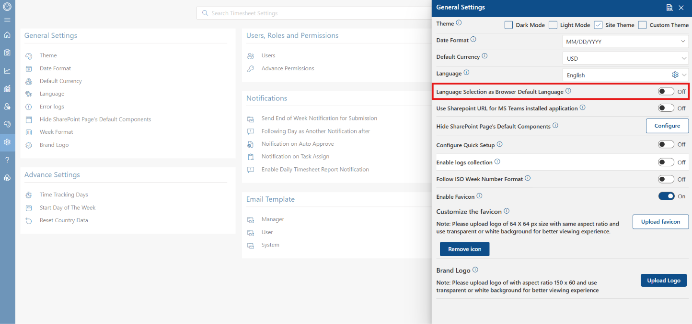
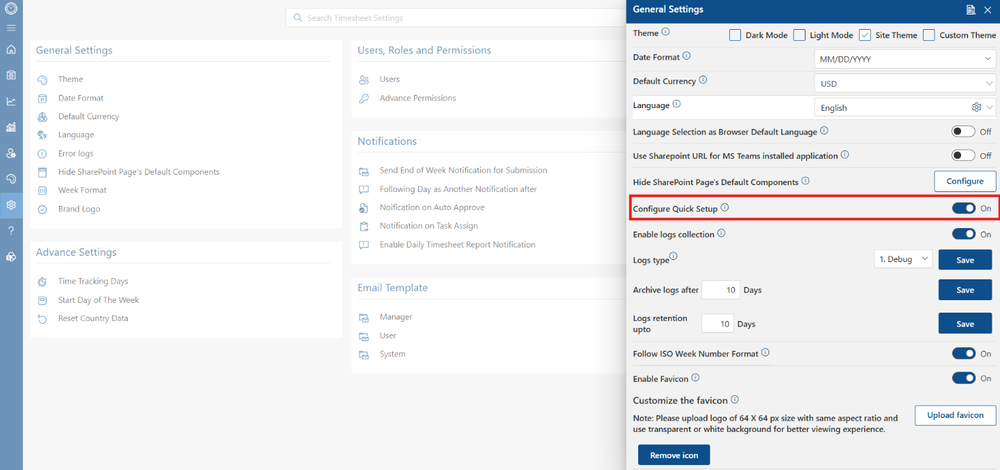

General Settings
The General Settings section provides a centralized hub for configuring the application's overall visual appearance, regional localization, SharePoint component behavior, diagnostic logging, and custom organizational branding.
Accessing General Settings
To access these configuration options, navigate to the main settings dashboard and locate the General Settings section on the upper left panel. Selecting items from this section launches the central configuration panel.

Appearance & Localization Settings
1. Theme Settings
The Theme control manages the visual design and color scheme of the platform. Administrators can select from Dark Mode, Light Mode, Site Theme, or Custom Theme to match organizational brand guidelines or user accessibility preferences.

2. Date Format
The Date Format dropdown sets the global display standard for calendar dates across all timesheet views, submission forms, and analytical reports.

3. Date Format Options
A wide variety of international date structures are available, including MM/DD/YYYY, DD/MM/YYYY, YYYY/MM/DD, DD-MMM-YYYY, and other regional patterns.

4. Default Currency
The Default Currency setting establishes the base monetary unit used for financial metrics, hourly billing rates, and cost tracking across system modules.

5. Currency Options
The currency dropdown contains standard international currencies (such as USD, JPY, KRW, NGN, and others) to ensure global financial reporting alignment.

6. Language
The Language setting defines the primary interface language applied across all standard user screens, buttons, and navigation elements.
7. Language Options
Select from supported international languages—including English, Arabic, Czech, Dutch, French, German, and others—to support multilingual teams.

8. Language Selection as Browser Default Language
When Language Selection as Browser Default Language is enabled, the system automatically detects each user's web browser locale settings and dynamically updates the UI language accordingly.

Integration, SharePoint & Diagnostic Settings
4. Configure Quick Setup
Enabling Configure Quick Setup activates streamlined onboarding prompts and automated wizard guides for fast application deployment.

5. Enable Logs Collection
The Enable logs collection section allows administrators to gather diagnostic logs for troubleshooting. You can specify the desired Log Type (such as Debug), establish the auto-archive threshold, and define the maximum retention period in days.
Calendar Standards & Branding
1. Follow ISO Week Number Format
Activating Follow ISO Week Number Format ensures that week numbering across timesheet periods, calendars, and exported reports strictly follows the ISO 8601 international standard.
2. Enable Favicon & Customization
The Enable Favicon setting allows administrators to upload a custom 64x64 pixel browser icon. Using the Upload favicon or Remove icon buttons lets you maintain consistent corporate identity right in browser tabs.